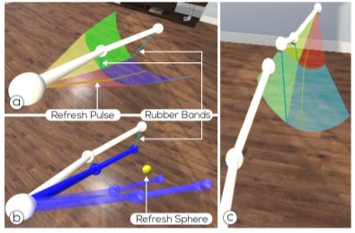

Perspective Matters: Design Implications for Motion Guidance in Mixed Reality

ISMAR (2020) Full Paper
Authors
Xingyao Yu, Katrin Angerbauer, Peter Mohr, Denis Kalkofen, Michael Sedlmair
Materials
Abstract
We investigate how Mixed Reality (MR) can be used to guide human body motions, such as in physiotherapy, dancing, or workout applications. While first MR prototypes have shown promising results, many dimensions of the design space behind such applications remain largely unexplored. To better understand this design space, we approach the topic from different angles by contributing three user studies. In particular, we take a closer look at the influence of the perspective, the characteristics of motions, and visual guidance on different user performance measures. Our results indicate that a first-person perspective performs best for all visible motions, whereas the type of visual instruction plays a minor role. From our results we compile a set of considerations that can guide future work on the design of instructions, evaluations, and the technical setup of MR motion guidance systems.